My role
As the sole Product Designer at EVPassport, I led the UX strategy and product design, shaping a seamless charging experience across iOS, Android, and web CRM while aligning teams around a user-centered vision.
- 🚀Built & Led the UX StrategyDefined the product’s UX vision, ensuring a cohesive experience across all platforms through research-backed design decisions.
- 🎨Established the First Design SystemStandardized UI components, improving consistency, scalability, and development efficiency.
- 🤝Bridged Design, Product & EngineeringDefined user stories, roadmaps, and priorities, ensuring smooth execution and alignment with technical feasibility.
- 📊Validated UX with Customer ResearchLed interviews, usability tests, and persona development, directly influencing product improvements.
- 🌍Cross-Team LeadershipEstablished monthly syncs with Marketing, CSM, and Support, integrating business insights into the UX strategy.
- 🛠Optimized Product DevelopmentLed weekly product meetings and implemented a prioritization matrix, streamlining feature execution.
- 📈Scaling & HiringHired a Graphic Designer (USA) and onboarded new PMs, shaping the company’s growing UX culture.
- ✅QA & Visual ConsistencyIntroduced design QA, reducing UI inconsistencies and improving product quality.
My work elevated EVPassport’s UX maturity, driving a strategic, research-backed, and scalable approach to product design while fostering stronger team collaboration.
Business Goals
EVPassport is on a mission to accelerate EV adoption by redefining the charging experience with a focus on seamless usability, reliability, and innovation. As a leading Infrastructure-as-a-Service (IaaS) platform, EVPassport prioritizes:
- 🚀Frictionless Management ExperienceA user-friendly, app-free system that removes barriers to EV charging, ensuring effortless access and convenience.
- 🔗Reliability & Scalability & PrivacyA robust, always-on network designed for maximum uptime and operational efficiency.
- 📊Data & AI-Driven OptimizationLeveraging real-time analytics and machine learning to enhance charging station performance and improve user experiences.
- 💡Enterprise & Consumer-Centric SolutionsProviding businesses, municipalities, and drivers with a scalable, future-proof charging ecosystem.
Impact Done📈
- 23.4%increase in engagement rateUsers interact more with the dashboard and other tabs, driving stronger connections with the platform and coming back more than once per month.
- 14%growth in new business ownersExpanding our platform, attracting more business to the EV charging command center, with notifications and integrations standing out in the market.
- 39.8%decrease in support ticketsUsers are spending more time on a seamless and frictionless experience.
- 60%increase in role management sessionsMore frequent usage, improved metrics, and generating more roles on each deal.
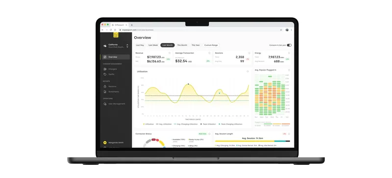
The full process
Research, decisions and iterations, step by step.
Operators and businesses lacked a centralized, intuitive and reliable platform to efficiently manage EV charging networks, monitor station performance, and streamline user interactions.
The Problem
- 📊Not Relevant or Important Metrics, not reliableOperators were overwhelmed by irrelevant or overly complex data points that didn’t provide actionable insights. Key metrics like session frequency and charging speeds were often buried under unnecessary information, making it difficult to focus on critical performance indicators.
- ⚡Limited Control & AutomationAdjusting pricing, managing user access, and generating reports required manual intervention, slowing down operations. Businesses needed a dynamic system to automate processes and reduce administrative burden.
- 🔗Lack of Seamless Enterprise IntegrationsOperators relied on external business systems like Google Workspace, Microsoft 365, and Oracle PMS. A lack of native integrations made it challenging to streamline workflows, automate billing, and offer features like bill-to-room for hospitality partners.
UX Vision
Create a seamless, accessible, and scalable dashboard experience that allows business customers to manage their EV stations effortlessly, without complex processes or technical hurdles.
Aligning with EVPassport’s Mission & Goals
🔌 Simplify Operations for Businesses
🏢 Empower Businesses with Scalable Solutions
🌐 Drive Market Innovation
🌱 Promote Sustainability
Why It Mattered
- EfficiencyStreamlined operations and reduced manual tasks for station managers.
- ScalabilityFlexible pricing, performance tracking, and integrations supported business growth.
- User SatisfactionA simplified dashboard enhanced the operator experience and decision-making.
Success Metrics
- Higher EngagementIncreased usage and quicker issue resolution by operators.
- Growth in AdoptionMore businesses joining the platform.
- Fewer Support InquiriesReduced queries related to dashboard navigation.
- Increased ProductivityMore efficient workflows with less manual intervention.
- Customer Satisfaction Scores(CSAT) - Less support tickets
Users
Key Markets
🇺🇸 USA
🇲🇽 Mexico
🇨🇦 Canada
User Personas
🚗 Driver (B2C)
🏢 Business Customer (B2B)
Creation of user personas based on data from CSM, Sales and Research from users.
Stakeholders
🤝 CSM
💼 Sales
📈 Marketing
📊 Data Strategy
🔧 Engineering
🛠 Support
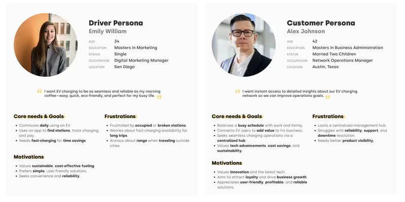
User Journey Maps
I developed detailed, end-to-end User Journey Maps for both Driver and Business Customer personas across various industries, with a particular emphasis on Multifamily and Hospitality, ensuring a seamless EV charging experience at every touchpoint.
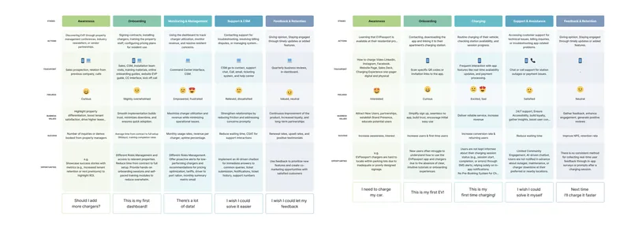
Research & Insights
🔍 Online Interviews
Collected valuable user feedback to understand pain points and expectations.
🎯 25+ Usability Tests with Lyssna – Conducted in-depth testing to optimize the EV charging experience and improve usability.
📊 Datadog – Analyzed user behavior data to validate findings and refine design decisions.
📐 Competitive Analysis in Figma – Benchmarked against competitors to uncover opportunities and enhance our strategy. Using screenshots, mobbin and more.
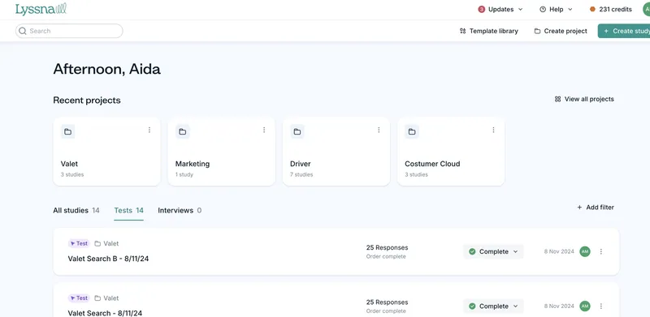
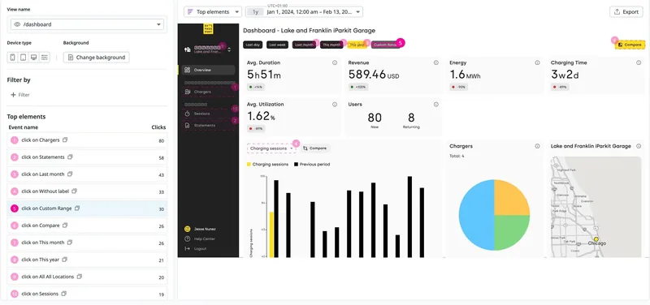
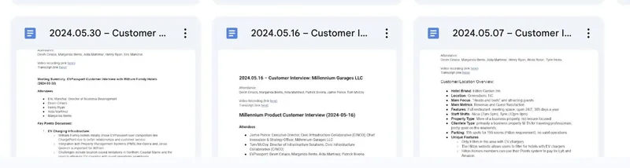
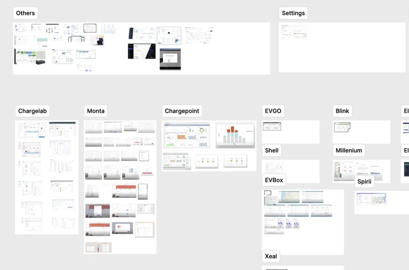
Cross-Collaboration
🤝 Weekly Product Syncs
Regular meetings with PMs and the VP of Product to align on priorities, roadmaps, and research strategies.
🔧 Engineering Partnership – Served as the go-to contact for design specifications and user flows, working closely with Engineering to ensure seamless implementation.
📣 Monthly Cross-Functional Alignment – Held monthly meetings with CSM and Support, and maintained dedicated channels with Support, CSM, and Sales to integrate business insights and streamline communication.
🛠 Agile Ceremonies – Actively participated in Refinements, Retrospectives, and Sprint Plannings, ensuring continuous improvement and effective sprint execution.
📊 Customer & Sales Integration – Collaborated with the Sales Manager to conduct customer interviews and gather actionable user insights.
🎨 Team Onboarding & Growth – Led onboarding sessions for new PMs and contributed to hiring a Graphic Designer, strengthening our design and product strategy.
Strategic Design & Roadmap
🚀 Prioritization & Quick Wins & Jira
Leveraged a prioritization matrix to identify high-impact quick wins.
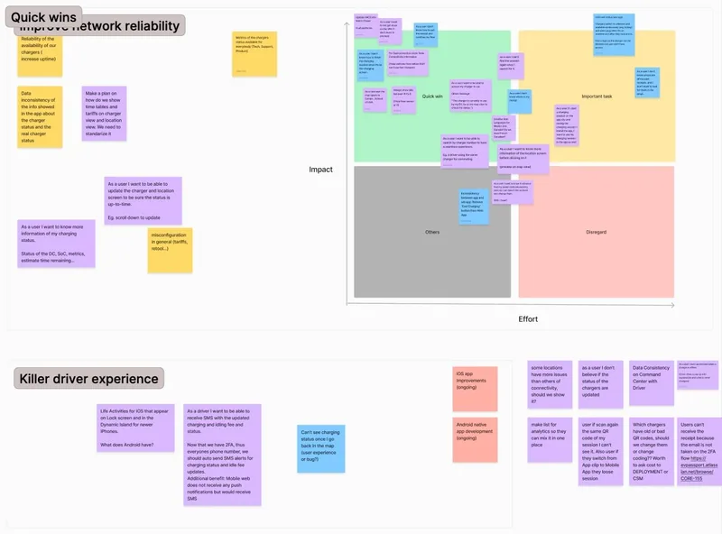
🗺 Comprehensive Roadmap
Developed a detailed roadmap in Asana outlining Epics, Big Epics, user stories, and tasks.
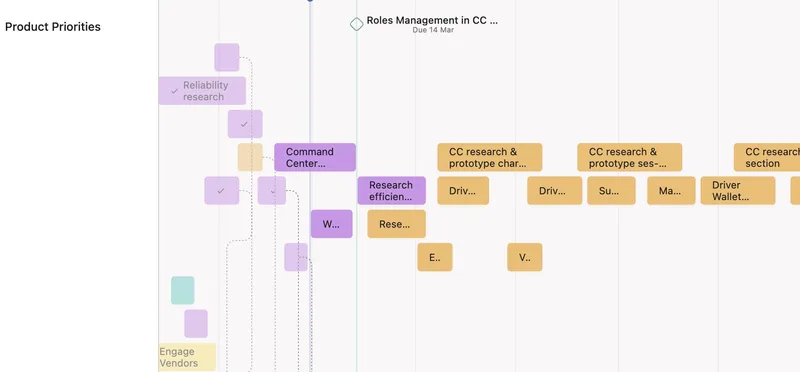
Key Opportunities Uncovered from Customer Insights
PROBLEM
Enterprise clients lacked visibility into charger info, activity, limiting operational efficiency and ROI tracking.
Sketching and analysis of the flows, analysing requirements
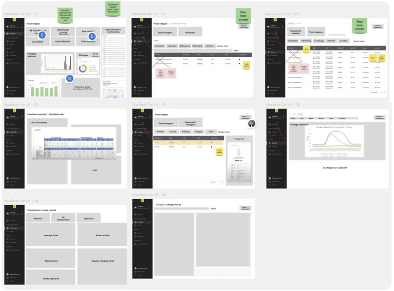
More insights from interviews
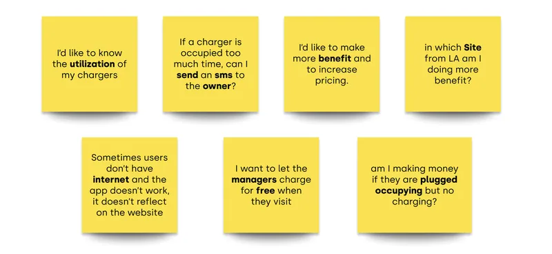
From Pain Points to Prototypes
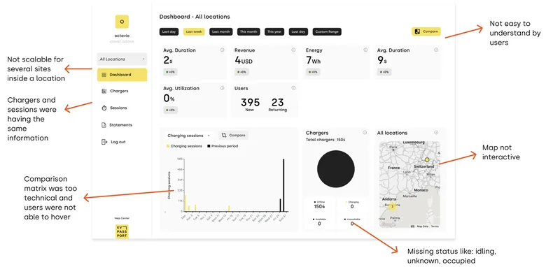
Improved Dashboard after several iterations, A/B testing and interviews
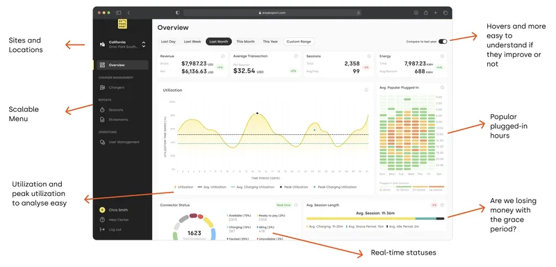
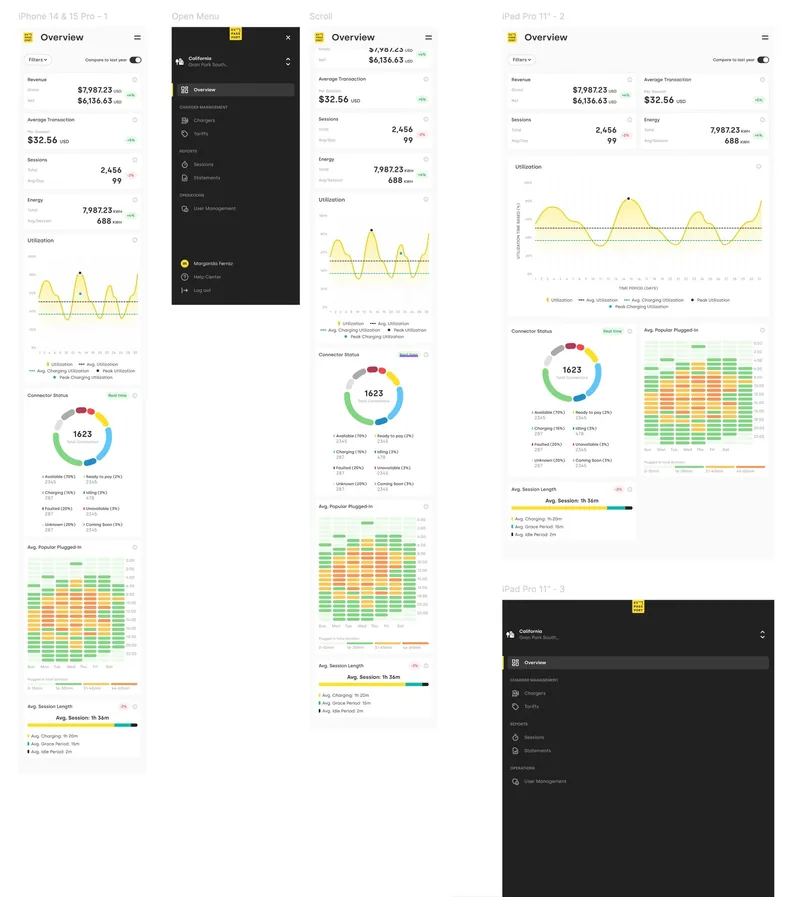
Simplifying management flows for Property Managers
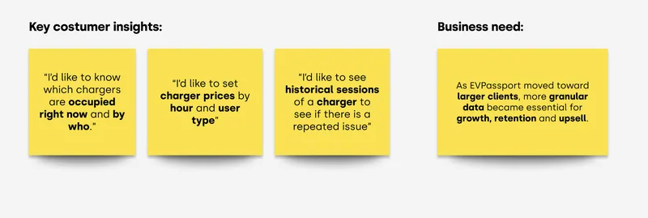
New metrics analysed on Datadog for analytics, interviews with Customers and competitive analysis:
- Filters Generic
- Menu Reorganization
- Avg. Popular Plugged-In
- Utilization Time-Based
- Utilization Energy-Based
- Peak Utilization
- Comparison on summary widgets
- Charger Tab
- Sessions Tab
- User Management Tab
Tariffs flow analysis from customer insights
Sketching, research and flows analysis
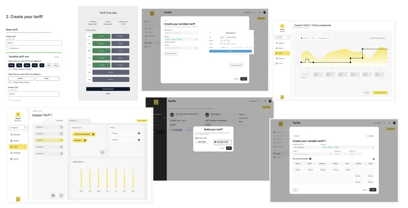
From Insights & Pain Points to Prototypes
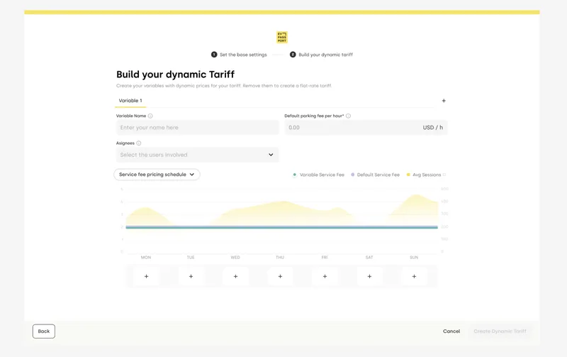
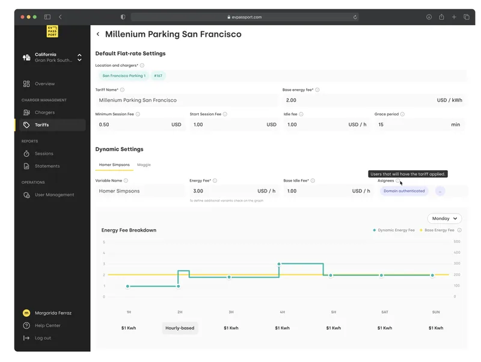
User Roles & Permissions for Multi-Site Management
PROBLEM
Enterprise customers managing multiple sites and teams lacked clear access control. All users shared the same permissions, which caused operational confusion, security risks, and inefficiencies across locations.
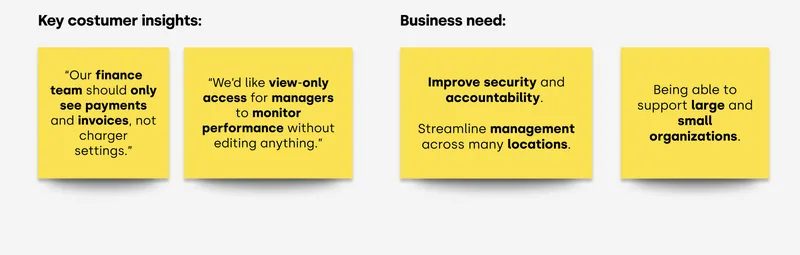
Analysis of the flows and permissions for each role, adapting to different sizes of customers
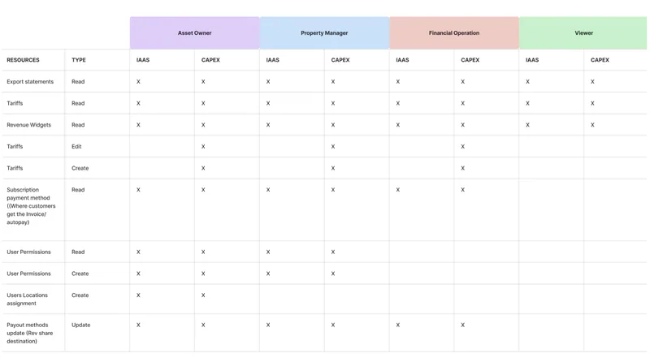
Study and analysis of the metrics to track on Datadog. To be later on used on the dashboard and on other tabs of the Command Center
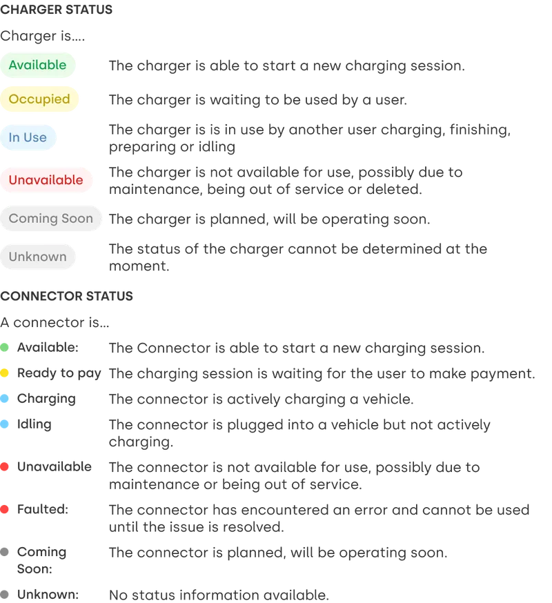
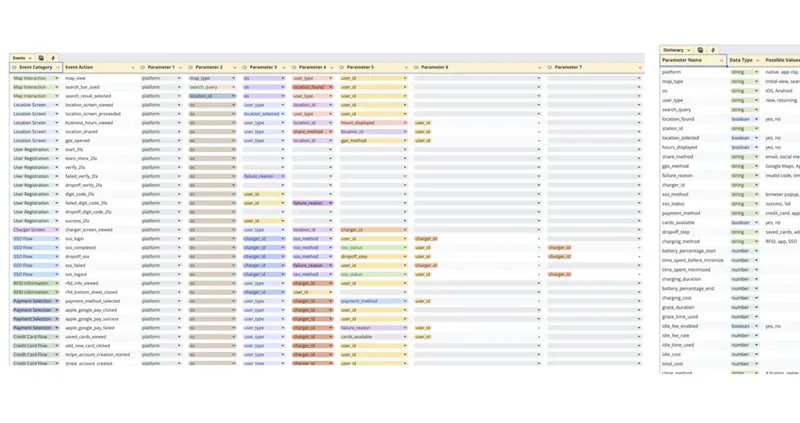
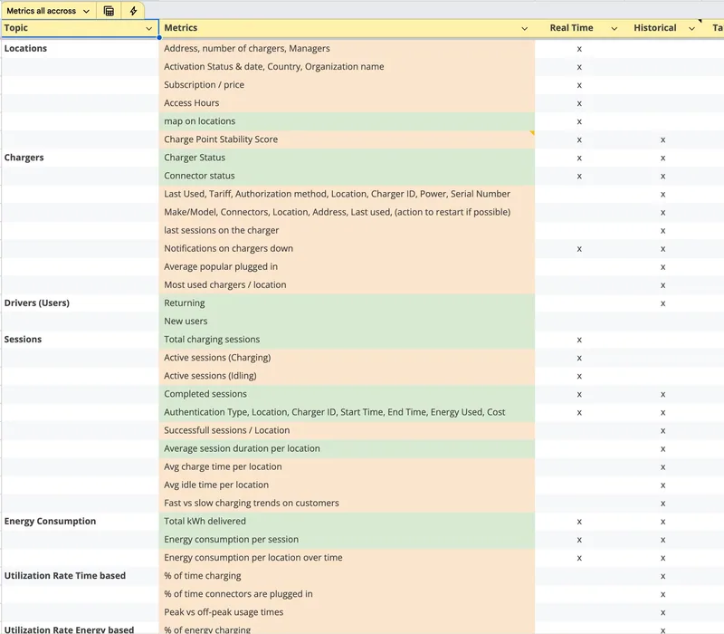
Improving data accuracy & status clarity for internal teams
PROBLEM
Metrics related to charger and connector performance were inaccurate, inconsistent, and not tracked historically or in real time. Internal teams struggled to monitor performance across desktop and mobile, and users found the technical status labels confusing.
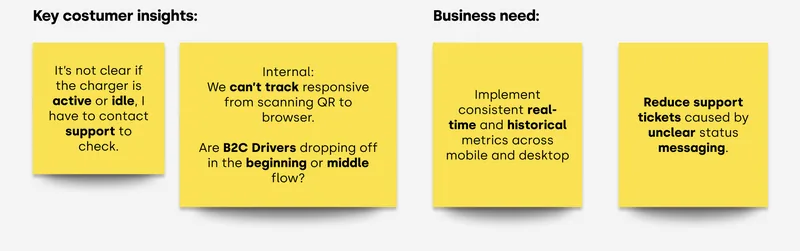
Design System & Implementation
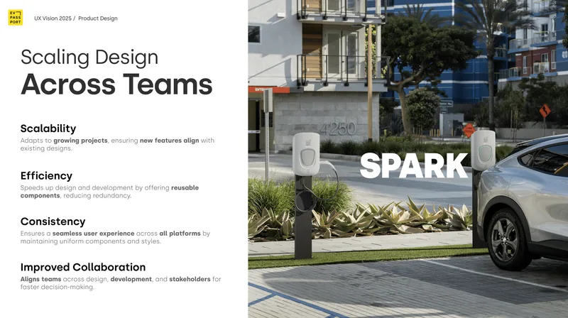
Established a Design System from scratch and integrated it into Storybook, streamlining developer handoff with precise specifications and seamless implementation.
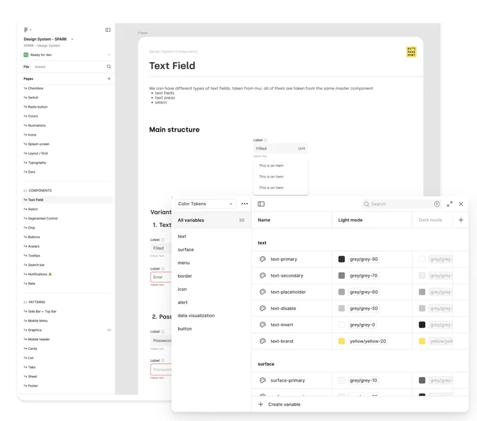
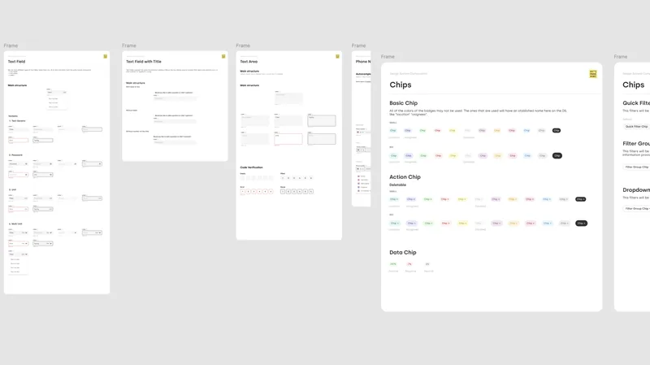
Business & UX Impact
Results
- 23.4%increase in engagement rateUsers interact more with the dashboard and other tabs, driving stronger connections with the platform and coming back more than once per month.
- 14%growth in new business ownersExpanding our platform, attracting more business to the EV charging command center, with notifications and integrations standing out in the market.
- 39.8%decrease in support ticketsUsers are spending more time on a seamless and frictionless experience.
- 60%increase in role management sessionsMore frequent usage, improved metrics, and generating more roles on each deal.
Learnings
- 🎯User-Centered DesignFocusing on the entire user experience improved usability and satisfaction across all touchpoints.
- 🤝Cross-Functional CollaborationClose alignment between product, engineering, and marketing ensured design decisions met both business and technical needs.
- 📊Data-Driven StrategyUser research and analytics guided design refinements and validated our approach.
- 🔄Iterative ImprovementRegular feedback and agile processes allowed continuous product enhancements based on real user needs.
New Upselling Project Opportunity discovered through interviews and insights
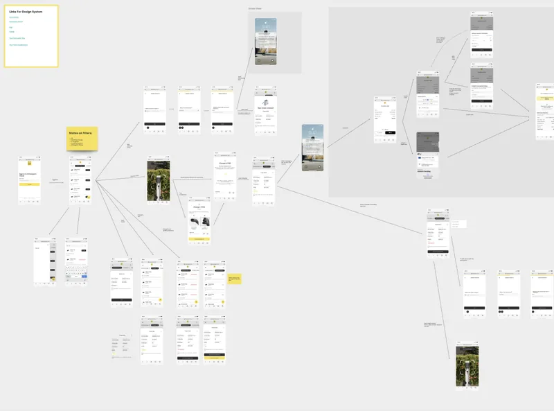
Valet Cloud DEMO
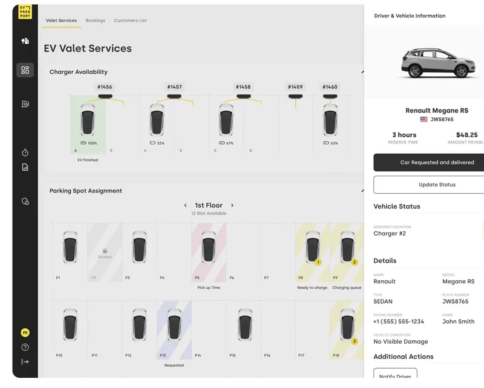